Получение практических навыков работы в консоли с атрибутами файлов,
закрепление теоретических основ дискреционного разграничения доступа в
современных системах с открытым кодом на базе ОС Linux
Задание
Работа с атрибутами файлов
Заполнение таблицы “Установленные права и разрешённые действия”
Заполнение таблицы “Минимальные права для совершения операций”
Выполнение лабораторной
работы
В операционной системе Rocky создаю нового пользователя guest через
учетную запись администратора (рис. 1).
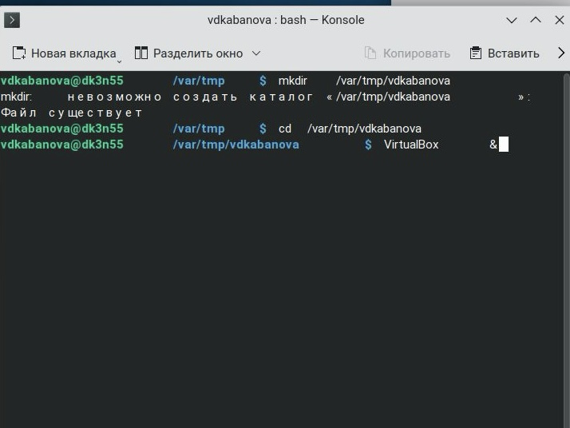
Добавление пользователя
Далее задаю пароль для созданной учетной записи и меняю пользователя
на guest с помощью команды su guest (рис. 2).
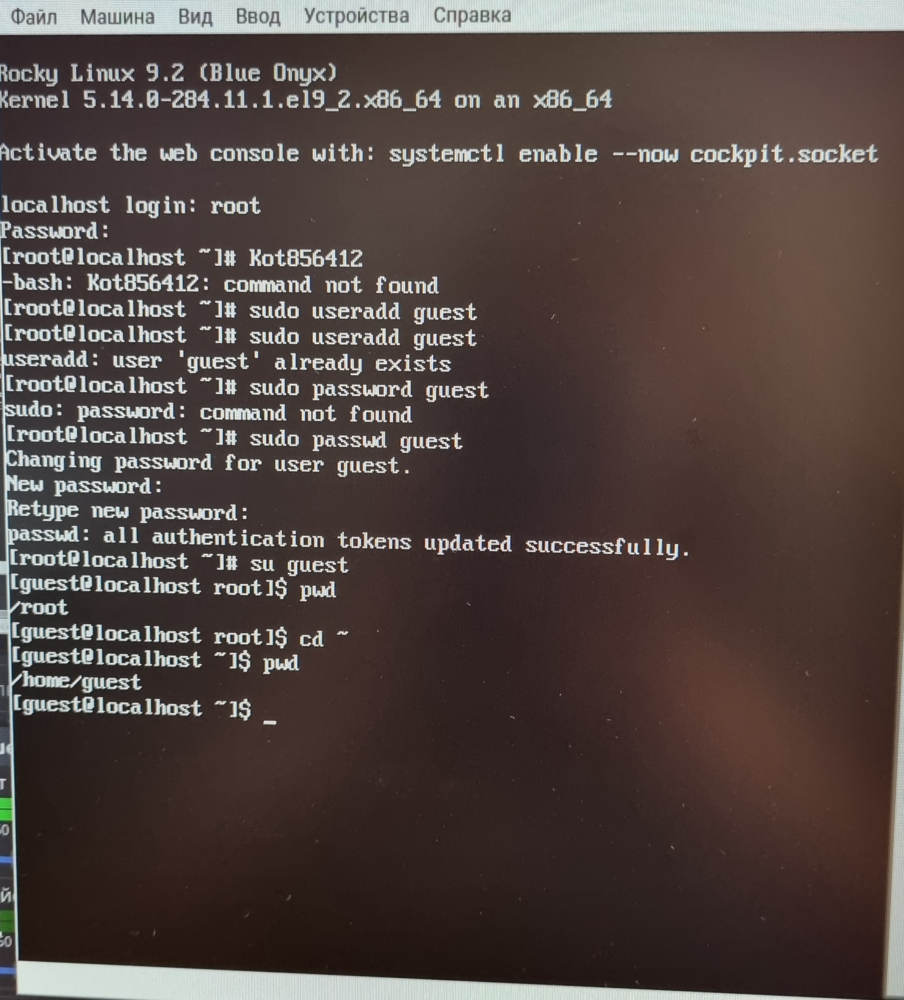
Добавление пароля для пользователя и
смена аккаунта
Выполнение лабораторной
работы
Определяю с помощью команды pwd, что я нахожусь в директории
/home/guest/. Эта директория является домашней, ведь в приглашении
командой строкой стоит значок ~, указывающий, что я в домашней
директории. Также я уточняю имя пользователя (рис. 3).
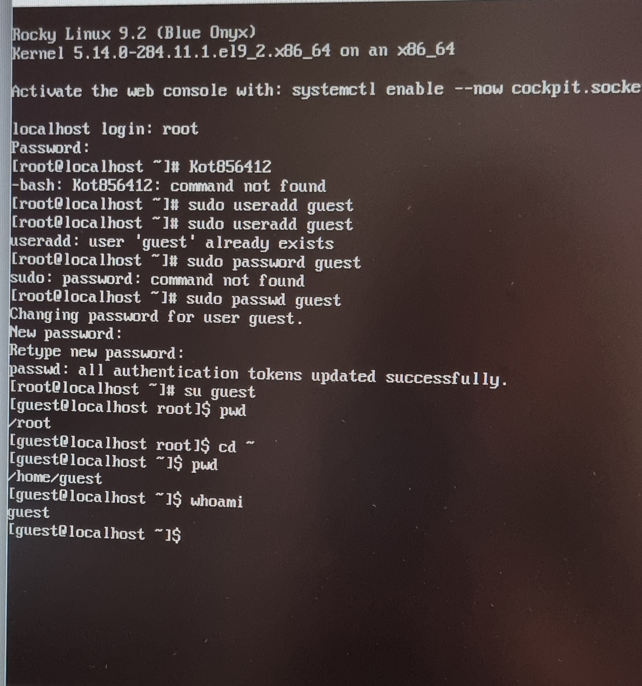
Текущая директория
В выводе команды groups информация только о названии группы, к
которой относится пользователь. В выводе команды id можно найти больше
информации: имя пользователя и имя группы, также коды имени пользователя
и группы (рис. 4)
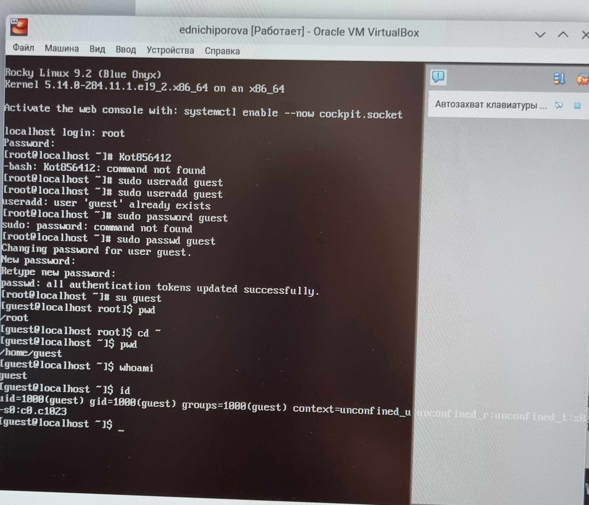 # Выполнение лабораторной работы .
Имя пользователя в приглашении командной строкой совпадает с именем
пользователя, которое выводит команда whoami (рис. 5)
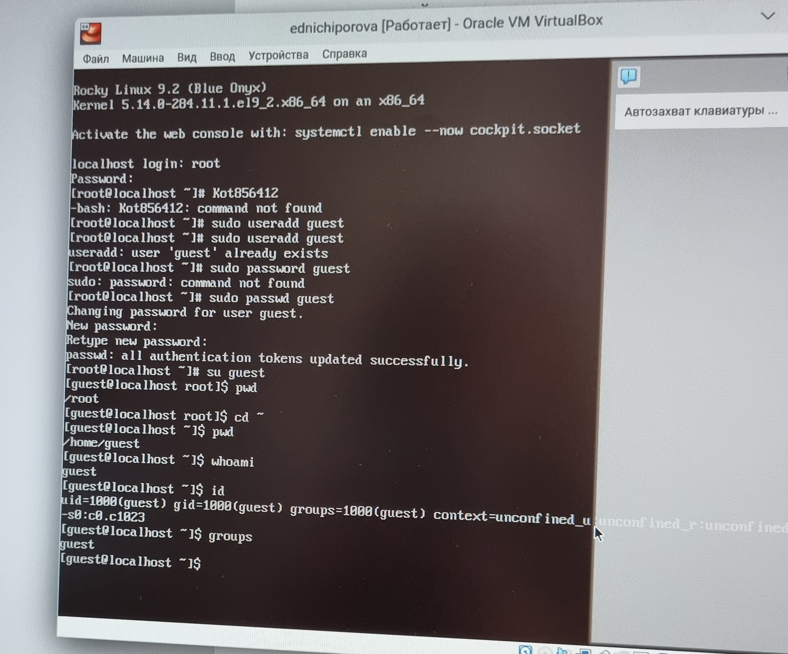
Сравнение информации об имени
пользователя
Получаю информацию о пользователе с помощью команды
cat /etc/passwd | grep guest
В выводе получаю коды пользователя и группы, адрес домашней
директории (рис. 6).
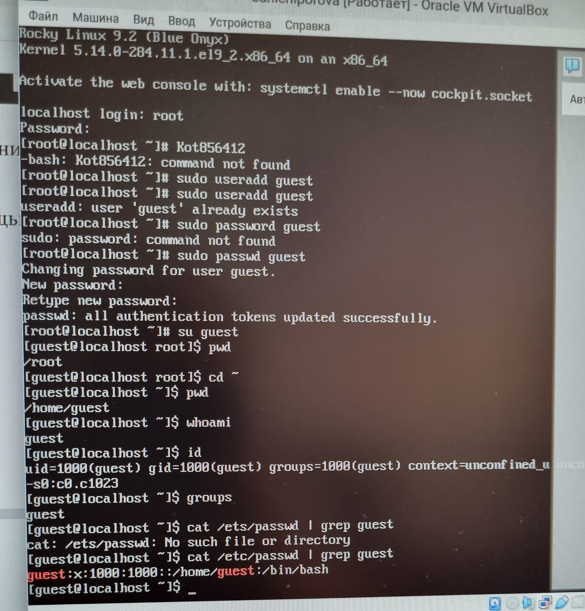
Просмотр файла passwd
Выполнение лабораторной
работы
Да, список поддиректорий директории home получилось получить с
помощью команды ls -l, если мы добавим опцию -a, то сможем увидеть еще и
директорию пользователя root. Права у директории:
root: drwxr-xr-x,
evdvorkina и guest: drwx—— (рис. 7).
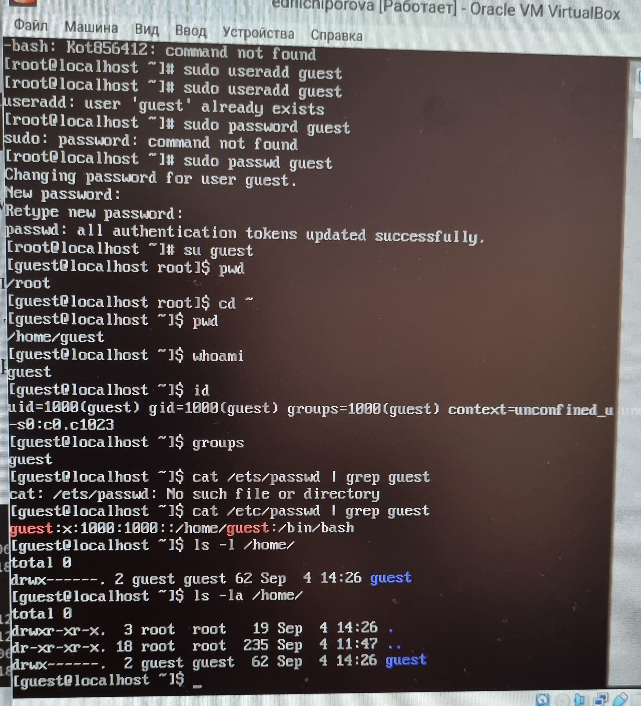
Просмотр содержимого
директории
Выполнение лабораторной
работы
Пыталась проверить расширенные атрибуты директорий. Нет, их увидеть
не удалось (рис. 8). Увидеть расширенные атрибуты других пользователей,
тоже не удалось, для них даже вывода списка директорий не было.
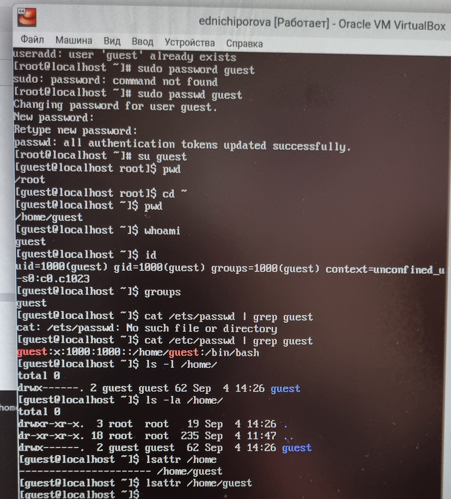
Проверка расширенных
атрибутов
Создаю поддиректорию dir1 для домашней директории. Расширенные
атрибуты командой lsattr просмотреть у директории не удается, но
атрибуты есть: drwxr-xr-x, их удалось просмотреть с помощью команды ls
-l (рис. 9).
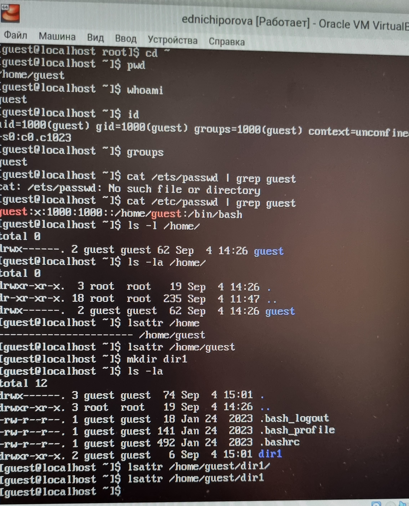
Создание поддиректории
Выполнение лабораторной
работы
Снимаю атрибуты командой chmod 000 dir1, при проверке с помощью
команды ls -l видно, что теперь атрибуты действительно сняты (рис.
10).
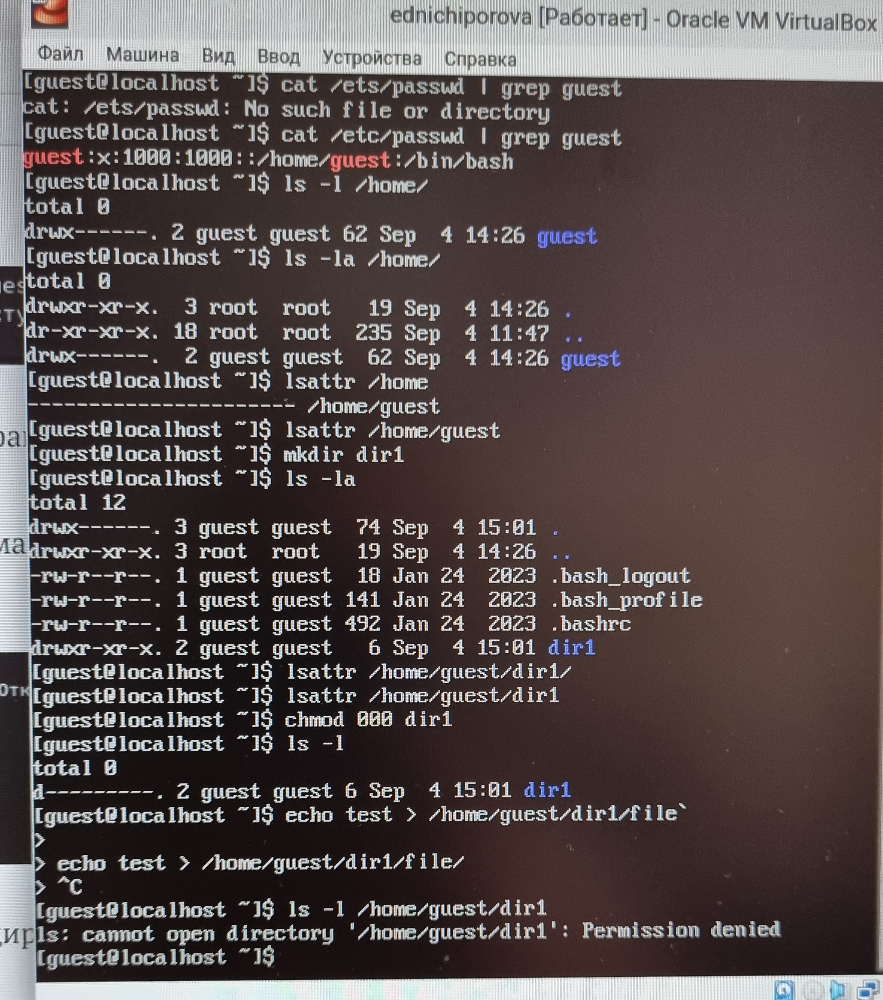
Снятие атрибутов с
директории
Попытка создать файл в директории dir1. Выдает ошибку: “Отказано в
доступе” Вернув права директории и использовав снова командy ls -l можно
убедиться, что файл не был создан (рис. 11).
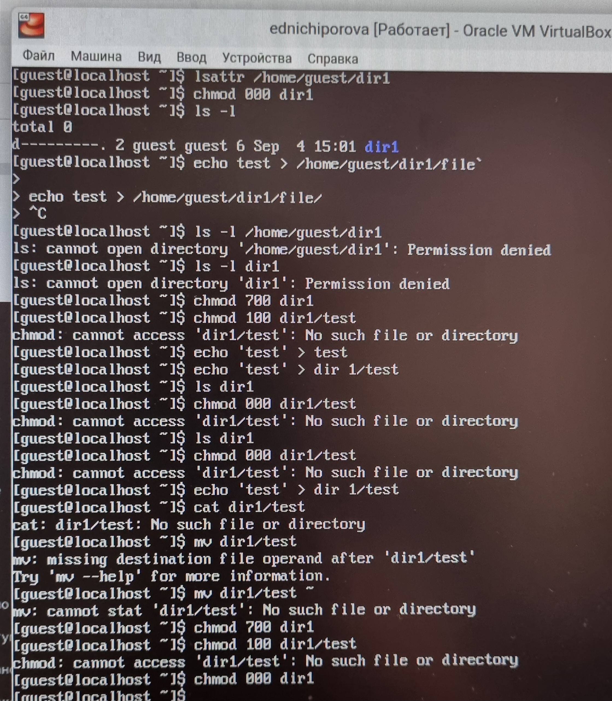
Попытка создания файла
Выводы
Были получены практические навыки работы в консоли с атрибутами
файлов, закреплены теоретические основы дискреционного разграничения
доступа в современных системах с открытым кодом на базе ОС Linux.